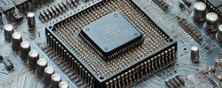
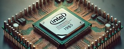

1968
Sustainability Through the Ages
Explore Intel's journey through time, discovering how our commitment to innovation has shaped a more sustainable future for technology and our planet.
Scroll to explore ↓Explore Intel's journey through time, discovering how our commitment to innovation has shaped a more sustainable future for technology and our planet.
Scroll to explore ↓

Scroll to view timeline | Hover over cards to learn more!